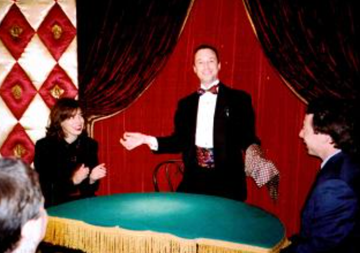

Comments from executives, event planners, and Larry's fellow magicians
"There were a few others that I really liked. One was Larry Warshaw. I'm not sure, but I think it was the first time he played the Castle. Larry is a solid entertainer."
Jules Lenier, Genii Magazine, reviewing Larry Warshaw's debut at The Magic Castle in Hollywood, California.


"When clients called me to RSVP this year, many of them asked if you would be performing again. Your magic makes our event stand out from all other parties, and provides the perfect icebreaker for our guests. The wide variety of tricks in your repertoire kept everyone entranced all evening. I cannot wait to see what you bring to the party next year!"
Jennifer Fenton, Bollinger, Ruberry & Garvey, Chicago, Illinois.
"Larry Warshaw has a reputation as a sleight-of-hand expert, but presentation is where he excels."
"We contracted Larry Warshaw to bring his magic to the company holiday party. Our gathering was attended by nearly 800 physicians, employees and guests. Larry traveled table to table, room to room, surprising, amazing and amusing our party goers. He has a special gift of magic and shares his style and personality to entertain and convert even the most doubting of observers!"
Joyce Johnston, McFarland Clinic (Ames, Iowa)
"You were a hit with our members. Your act was an important part of making our Trade Show segment of our Convention a huge success this year. Thanks for providing outstanding entertainment for our members."
Bob Kennedy, Executive Director, Community Bankers Association of Kansas
"When we asked Larry Warshaw to help us entertain and educate over 1,000 Kiewit stockholders at our Annual Meeting, we had no idea of the breadth of his talents. In addition to his stunning audience-focused magic, he was able to weave the message of his illusions into the message of our meeting, which was Employee Engagement. Larry was the hit of the week, and will no doubt be a welcome addition to many future Kiewit events."
Jon Swartzentruber, Vice President, Leadership Development, Kiewit Corporation, Omaha, Nebraska
"I would like to take this opportunity to personally thank you for entertaining at the Gates holiday party. We have presented you for the past five years to our associates. Every year that you return to our holiday party you have developed new material, have grown, and have new marvels to introduce to our audience.
Both your walk-around magic and your stand-up act have allowed our associates to not only participate, but become the real STARS of the show. Your magic has been amazing and your illusions continue to bring wonder and joy to our event each year. We are proud to number you among our longest-playing entertainers!"
Mark Cooper, Plant Manager, Gates Corporation, Boone, Iowa
"I just wanted to drop you a note in the wake of your awesome after-dinner performance at our Corps of Engineers Leadership Program Graduation Party. My reputation was on the line, because after I had seen you perform at another event, I pushed hard to hire you for the evening's entertainment. Others involved with planning the party were all leery about a "magic show" for a party of grown-ups. I promised and you delivered. You got the crowd into a great mood and everyone was laughing....and they're still laughing about it one week later! I have been in several conversations about you over the past few days, and I've overheard people talking about your baffling tricks. We're all trying to figure out how you pulled the wool over our collective eyes. Simply mind-boggling. The standing ovation at the end was gratifying for me and testimony to your splendid performance. Thanks again!"
Clif Rope, U.S. Army Corps of Engineers, Kansas City
"Words would not be enough to express the appreciation felt by PSLA for your performance during our 2006 Annual Membership Meeting dinner event. Thank you for making it such an enjoyable evening. Looking forward to seeing you again."
Robin L. Springer, Pennsylvania Surplus Lines Association, Hershey, PA
"I enjoyed working with you to arrange your performance for the opening night dinner. You were a meeting planner's dream -- and I truly appreciated your attention to detail and our deadlines. Of course, the responses from attendees to your performance were magical and it was a hit with all."
Sandra L. LaFevre, Vice President & Assistant Secretary, Reinsurance Association of America, Washington, DC
"Larry Warshaw provided the entertainment at our company holiday party. We have employees working at a number of locations so they don't all know each other well. Larry's magic was a very unifying force in the evening. He provided superb entertainment and had us all talking and laughing the rest of the evening. Larry definitely brought a level of class and entertainment to the party that would be hard to top. We will just have to ask him back next year!"
Jim Tiehen, President, The Tiehen Group, Kansas City, Missouri
"I hired Larry Warshaw to perform some magic at my friend's 40th birthday party. He actually performed within circles of people who were trying to "catch him" utilizing sleight of hand. Larry is very entertaining and was able to stay a step ahead of all of us. We were dumbfounded at the things Larry made appear and disappear. We could track where Larry was performing in the house by the sound of uproarious laughter and applause. All of us are still talking about Larry's performance."
Jill Frost, Kansas City
"Your performance at Elkay's 80th Anniversary Celebration was spectacular. The way you "wowed" the people with your "special kind of magic" was perfect. Moreover, I do appreciate your attention to detail by the way you so cleverly customized the tricks to Elkay. The "Elkay Card Trick" went over big.
You are the best!"
Jean Tipton, Elkay Manufacturing, Oak Brook, Illinois
"Thank you for your part in making our Program Managers Symposium dinner such a success. Our clients thoroughly enjoyed your performance. I especially wanted to let you know how much our guests enjoyed your magic -- not only was it amazing, but your presentation style was perfect for transforming strangers into acquaintances. You had people laughing and gasping all in the same breath!! Also, the creative way you made our corporate logo golf balls magically appear as gifts to our guests was spectacular, and a great way to tie in our earlier golf outing. In summary, you conveyed an image with which our Corporation was proud to be associated. I look forward to having you entertain at many future events!"
William E. Donnell, Senior Vice President, Westport Insurance Corporation, Overland Park, Kansas
"Thank you for meeting all of our expectations for our Winterfest program. A lot of people commented about the professionalism of your performance, and your ability to entertain small and large groups with your touches of humor! We look forward to having you back to entertain at our Service Awards program!"
Larry D. Conley, Human Resources Manager, 3M Corporation, Cumberland, Wisconsin
"Thank you for a very entertaining performance at our Service Awards Banquet. Your magic show was enjoyed by all and was a perfect fit for our group. Your talent was remarkable and your humor was enjoyed by all. It was a pleasure working with you and I look forward to working with you again."
Betty Harmon, Human Resource Representative, 3M Corporation, Columbia, Missouri
Let's Make the Magic Happen!
Book Larry